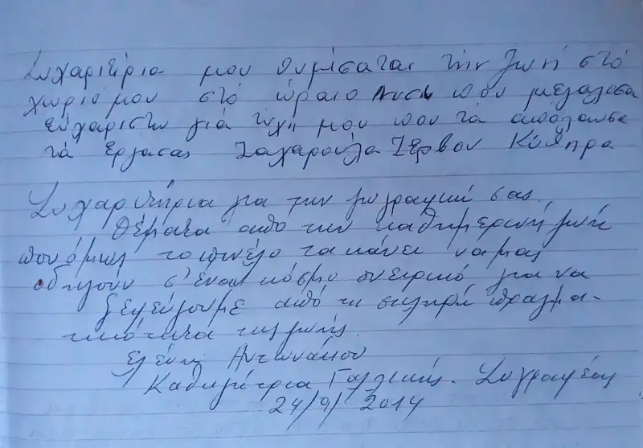
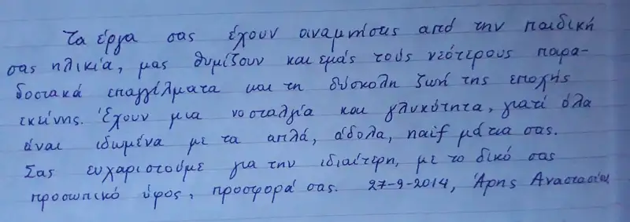

ΕΚΘΕΣΗ: ΔΗΜΑΡΧΕΙΟ ΠΕΡΙΣΤΕΡΙΟΥ
Νοέμβριος 2013 (4 - 13 Νοεμβρίου)
ΘΕΜΑ: "Μόχθος και ξεκούραση"
Ένα ταξίδι στο κέντρο της ανθρώπινης ύπαρξης όπου οι μόνοι ήχοι που ακούγονται μας ενώνουν στον πόθο και την αγάπη για ζωή.

Στην ισόγεια αίθουσα του Δημαρχείου του Περιστερίου, από την Δευτέρα 4 Νοέμβρη και μέχρι την Τετάρτη 13 Νοέμβρη, θα εκτεθεί η συλλογή του Νώντα Ρεντζή "μόχθος και ξεκούραση".
Τα εγκαίνια θα γίνουν την Δευτέρα 4 Νοέμβρη στις 19.00.
Η έκθεση τελεί υπό την αιγίδα του Δήμου Περιστερίου και της Ένωσης καλλιτεχνών και λογοτεχνών Ηλιούπολης το "εργαστήρι".
Καθημερινά μπορείτε να την επισκεφθείτε το πρωί από τις 10.30 μέχρι τις 13.30 και το απόγευμα από τις 18.00 μέχρι 21.00.
Ο καλλιτέχνης φιλοξενείται στον ιστορικό Δήμο των Δυτικών προαστίων με την μεγαλύτερη και πιο ολοκληρωμένη συλλογή του.
Μέσα στην πολύβουη πόλη που κατακλύζεται από τους βάρβαρους ήχους της καθημερινότητας η επίσκεψη σε αυτήν την έκθεση του καλλιτέχνη είναι μια βόλτα πίσω στον χρόνο.
Ένα ταξίδι στην εποχή που οι γειτονιές ξεχείλιζαν από ζωή και ακούγονταν οι φωνές των περιπλανώμενων επαγγελματιών που διαλαλούσαν τα εμπορεύματα ή τις υπηρεσίες τους και των παιδιών που όταν δεν τραβούσαν την φούστα της μάνας για παγωτό, κάστανα ή κεράσια έπαιζαν αμέριμνα στα σοκάκια.
Ένα ταξίδι στην εποχή που οι στεγνωμένοι από κούραση άνθρωποι του μόχθου ρουφούσαν με λαχτάρα κάθε στιγμή ξεκούρασης, κάθε ήχο, χρώμα και μυρουδιά γύρω τους και κάθε στιγμή χαράς που θα τους ξαναγεμίσει δύναμη να συνεχίσουν.
Ένα ταξίδι στην εποχή που ακόμα ακούγαμε την μουσική του ανέμου ανάμεσα στα φύλλα των δέντρων, το γλυκό κελάρυσμα του ρυακιού, τον ήχο της επαφής της σόλας με τα χαλίκια των μονοπατιών...
Ένα ταξίδι στην εποχή που οι μαστόροι, με την ευφυΐα και την προσήλωση στην τέχνη τους, κατάφερναν να ευκολύνουν και να ομορφύνουν την καθημερινότητα μας και να ζωντανέψουν την οικονομία ενός τόπου ρημαγμένου από πείνα και πολέμους.
Σήμερα, αυτούς τους ανθρώπους που βγήκαν οριστικά από το κάδρο των ενδιαφερόντων μας, όπως όλοι οι κλασσικοί λαϊκοί ζωγράφοι, ο Νώντας Ρεντζής τους ξανατοποθετεί μέσα από τα δικά του κάδρα, σαν φύλακας της συλλογικής μας μνήμης, στο κέντρο της νοσταλγίας μας. Τους βάζει μπροστά στα μάτια μας να μας διηγηθούν αυτοί την πιο "σιωπηλά φλύαρη" νεότερη ιστορία μας, τον πόθο και την αγάπη για ζωή, την αιώνια και συγκλονιστική μουσική που γράφει το ντουέτο του "μόχθου και της ξεκούρασης".
Έτσι οι επισκέπτες αυτής της έκθεσης θα μπορέσουν να ζωντανέψουν ξεχασμένες μνήμες και οι νεώτεροι από αυτούς, που δεν είχαν μέχρι τώρα επαφή με αυτό το πρόσφατο παρελθόν, θα μπορέσουν να ζωντανέψουν ξεχασμένες ιστορήσεις γερόντων και κοντινών, πριν αυτές χαθούν μέσα στην λήθη.
Ο καλαθάς, ο καστανάς, ο γανωματής, ο τροχιστής, ο πεταλωτής, ο σαμαρτζής, ο παγωτατζής, ο μανάβης, ο καρεκλάς, η φουρνάρισσα και οι πλύστρες, οι γεωργοί, οι ξυλοκόποι, οι βαρελάδες, οι κυνηγοί, οι ψαράδες και πολλοί άλλοι από την παρέα τους και ο ίδιος ο Νώντας με τις διηγήσεις του, σας περιμένουν να ανταμώσουμε.
(Πλατεία Δημοκρατίας, Τ.Κ. 12134, Περιστέρι, σταθμός μετρό Περιστέρι)
τηλέφωνα επικοινωνίας: 210 9917046 & 210 9915173






* Στα εγκαίνια προλόγισε ο Λεόντιος Πετμεζάς, θεωρητικός - ιστορικός τέχνης